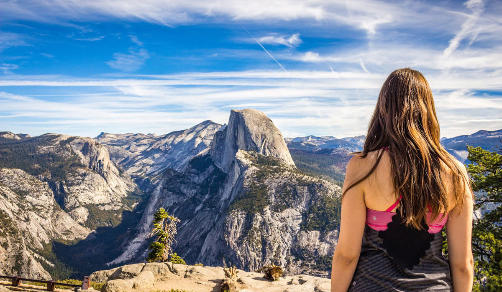

Mahuli Fort is located near Asangoan in Thane District of Maharashtra. Mahuli Fort is highest peak of Thane District, Hence it is also known as "Everest of Thane District".
Location: Mahuli Fort is located near Asangoan in Thane District of Maharashtra.
Base Village: Mahuli Village, Asangaon, Maharashtra(India)- 412108
Elevation/Height: The height of Mahuli fort is about 2815ft. above mean sea level.
Grade and Endurance level: Grade level is an easy but Endurance level is High. This trek will test your endurance.
Best time to visit: June to January is the best time to visit Mahuli Fort.
How to reach Mahuli Fort: Get down at Asangaon railway station which is on the central railway line. There is a regular auto-rickshaw service from Asangaon station to the base of the fort. Auto-rickshaw drivers charge about Rs. 250/- for single side ride.
One can also reach Mahuli fort via bus. There is Shahapur bus stop which is about 3km from Asangoan railway station. We will get share auto to reach Shahpur bus stop. A regular ST bus plays between Shahapur and Mahuli base village.
Bus time table:
Shahapur to Mahuli Village:
6.00am, 8.00am, 10.10am, 11.30am, 12.30pm, 2.30pm, 4.00pm, 6.10pm
Mahuli Fort Information
Mahuli fort is is a popular trekking destination near Mumbai. Mahuli fort is a paradise for rock climbers because of many nearby pinnacles with interesting names like Vazir, Vishnu, Navra, Navri, Mahuli-Chanderi etc., given by the local trekking and climbing fraternity. Mahuli Fort at 2815 ft, which is highest point in the Thane district.
Palasgad is northan side, Mahuli is in middle and Bhandargad stands on southern side.
Mahuli Fort Trek Route
Mahuli fort trek is an easy grade level but requires high endurance. Mahuli trek begins from it's base village known as Mahuli village. There is Lord Shiva temple at it's base.

There is an entrance gate which welcome all the trekkers. We have to pay 20rs as this fort is maintained by Maharashtra government. Initial trek route is simple and we come across a bridge. Left from this bridge goes to Waterfall. Mahuli fort trek route is well marked with arrows and proper signboards.
There is another route to reach Mahuli fort which is via Vasind, But this route is difficult and confusing. This route is not recommended in monsoon season.
Mahuli Fort History
he creator of this fort are Mughals. In 1485 this place came under rule Nijamshahi dynasty. When Shahaji Raje became the secretary of Nijamshahi, Mughals of Delhi tried to end Nijamshahi. In 1635-36, Shahaji Raje transferred himself with Jijabai and Chatrapati Shivaji Maharaj to Mahuli. When Khan Jaman attacked the fort, Shahaji asked Portuguese for help, who refused and Shahaji surrendered.

Chatrapati Shivaji Maharaj took this fort from Mughals on 8 Jan 1658. In 1661 it was given back and was won again by Chatrapati Shivaji Maharaj. In treaty of Purandar, in 1665, Marathas lost these forts again. In Feb 1670, Chatrapati Shivaji Maharaj tried to conquer Mahuli, but failed, Manohardas Gaud, was the in charge of the fort. A thousand Marathas were killed.Most of them were from nearby villages.Chatrapati Shivaji Maharaj said to his dead kadam sardar he is our gold. So maharaj gave the Sonare surname to this family. Manohardas Gaud, soon gave up his position and Alveerdi Beg took over. On 16 June 1670, after two months, Moropant Pingle conquered the forts and Mahuli, Bhandargad and Palasgad became part of Swarajya. Till 1817, Shivaji's dynasty owned the fort but later on it was controlled by the British Raj.